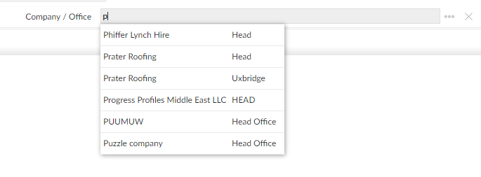
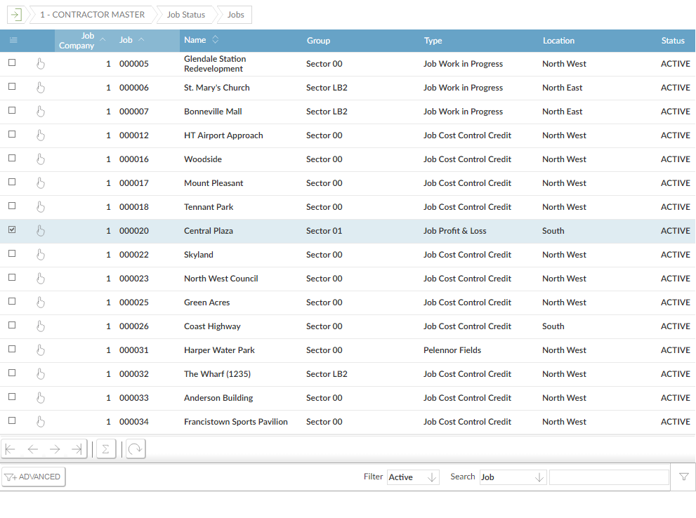
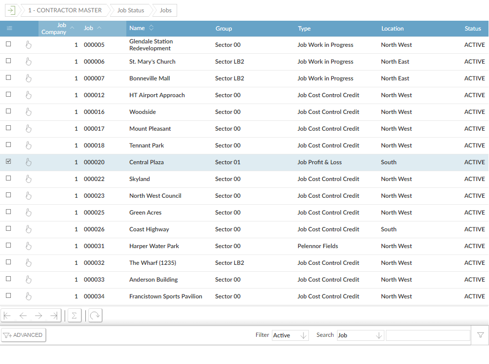

button next to them.
button next to them.
On many fields where you have a choice of input, you can "lookup" the existing choices and select one. Fields with a lookup have a button next to them.
Inline lookups display a list of up to ten records that begin with the characters you type; as you continue to type, the list changes to match what you type. You can select a record from the list to use as the input to the field. You can also continue to type the input in full.

NOTE
If there are more than ten matching records, the lookup shows ... to indicate this. You can either continue to type until there are fewer matching records, or use the lookup browse (see below).
Some lookup fields are disabled, in which case you must use the lookup to select the entry.

You can type in the field to use the inline lookup; if you type an invalid entry and press Return or Tab to leave the field,

The inline lookups (with either lookup fields or disabled lookup fields) only show a maximum of ten entries, but there may be more entries to choose from. With either field, you can also use the lookup browse to give you a full browse screen in a separate window, from which you can select the item you want. Many lookup browses also allow you to filter and sort the records. If you type something in the field before you open the lookup window,
 

. next to the item you want.
next to the item you want.
NOTE
button appears in the lookup's button bar. in the button bar.
Set the lookup preferences for individual users with the Recall Filters in Lookups field in Users.
Set up or change lookups using Lookup Maintenance.